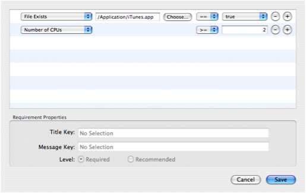

Specifying Requirements
To begin, press the “Edit Package Requirements...” button in the “Configuration” tab. This will provide you with an interface like this:
 The Requirements EditorSimilar to the distribution requirements editor, you can use this interface to specify the conditions that must be met to allow the package to be installed on the machine or on a volume on the machine. Simply create a rule for each check you want to perform.
Below the table, you can specify the properties for each check/requirement. A required check will cause Installer.app to cancel the install if it fails. A recommended check will throw a warning if it fails.
The Title and Message key fields allow you to specify what message will be presented to the user if a check fails. If the key is found in an IFRequirements.strings files in your localized .lproj directories, that string will be used. Otherwise, the key itself will be used.
Based on the requirements you specify, PackageMaker will create the following items in your package:
- An
IFRequirementsDictkey will be added to the Info.plist. The syntax for this is described here. This key will be used on systems running 10.3 or later. - If not already present, InstallationCheck and VolumeCheck scripts will be created. This is to provide backwards compatibility for versions of the OS before 10.3.